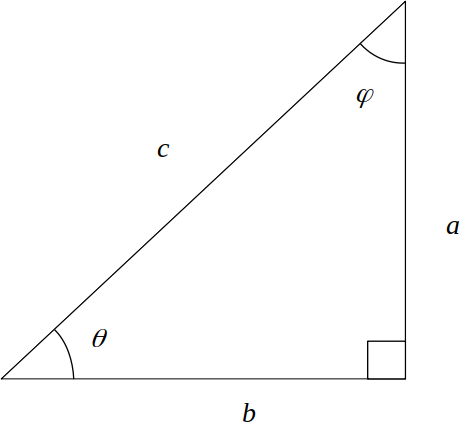

Identidades de Trigonometría
Apuntes
1 Identidades

sen(θ) = a/c
csc(θ) = 1/sen(θ) = c/a
cos(θ) = b/c
sec(θ) = 1/cos(θ) = c/b
tan(θ) = sen(θ)/cos(θ) = a/b
cot(θ) = 1/tan(θ) = b/a
sen(-x) = -sen(x)
csc(-x) = -csc(x)
cos(-x) = cos(x)
sec(-x) = sec(x)
tan(-x) = -tan(x)
cot(-x) = -cot(x)
sen2(x) + cos2(x) = 1
tan2(x) + 1 = sec2(x)
cot2(x) + 1 = csc2(x)
sen(x ± y) = sen(x)cos(y) ± cos(x)sen(y)
cos(x ± y) = cos(x)cos(y) ± sen(x)sin(y)
tan(x ± y) = [tan(x) ± tan(y)]/[1 ± tan(x)tan(y)]
sen(2x) = 2[sen(x)cos(x)]
cos(2x) = cos2(x) - sen2(x) = 2*cos2(x) - 1 = 1 - 2*sen2(x)
tan(2x) = 2tan(x)/[1 - tan2(x)]
sen2(x) = 1/2 - 1/2*cos(2x)
cos2(x) = 1/2 + 1/2*cos(2x)
sen(x) - sen(y) = 2*sen[(x - y)/2]cos[(x + y)/2]
cos(x) - cos(y) = -2*sen[(x - y)/2]sen[(x + y)/2]
2 Tabla Trig de Ángulos Ordinarios
| ángulo | 0 | 30 | 45 | 60 | 90 |
|---|---|---|---|---|---|
| sen2(a) | 0/4 | 1/4 | 2/4 | 3/4 | 4/4 |
| cos2(a) | 4/4 | 3/4 | 2/4 | 1/4 | 0/4 |
| tan2(a) | 0/4 | 1/3 | 2/2 | 3/1 | 4/0 |
3 Leyes trigonométricas
Dado un triángulo abc, con ángulos A,B,C; a está opuesto a A; b opuesto a B; c opuesto a C,
3.1 La Ley del Seno
a/sen(A) = b/sen(B) = c/sen(C)
3.2 La Ley del Coseno
c2 = a2 + b2 - 2ab cos(C)
b2 = a2 + c2 - 2ac cos(B)
a2 = b2 + c2 - 2bc cos(A)
3.3 La Ley de la Tangente
(a - b)/(a + b) = tan 1/2(A-B) / tan 1/2(A+B)